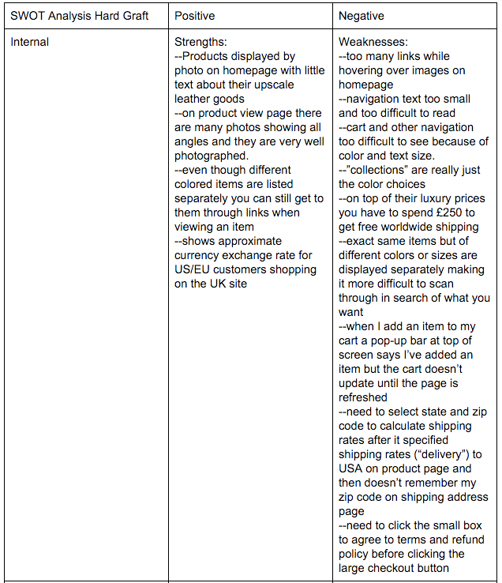
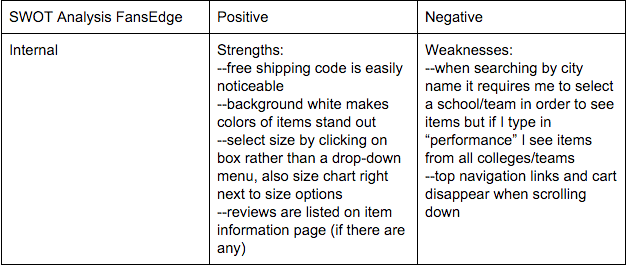
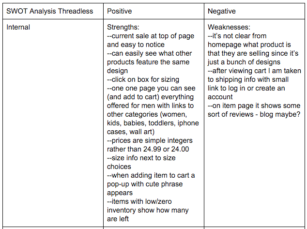
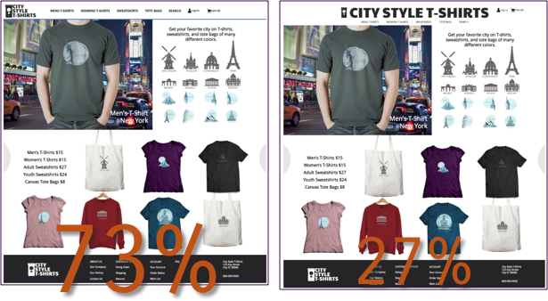
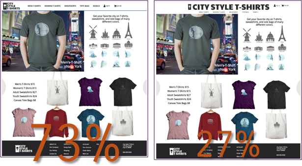
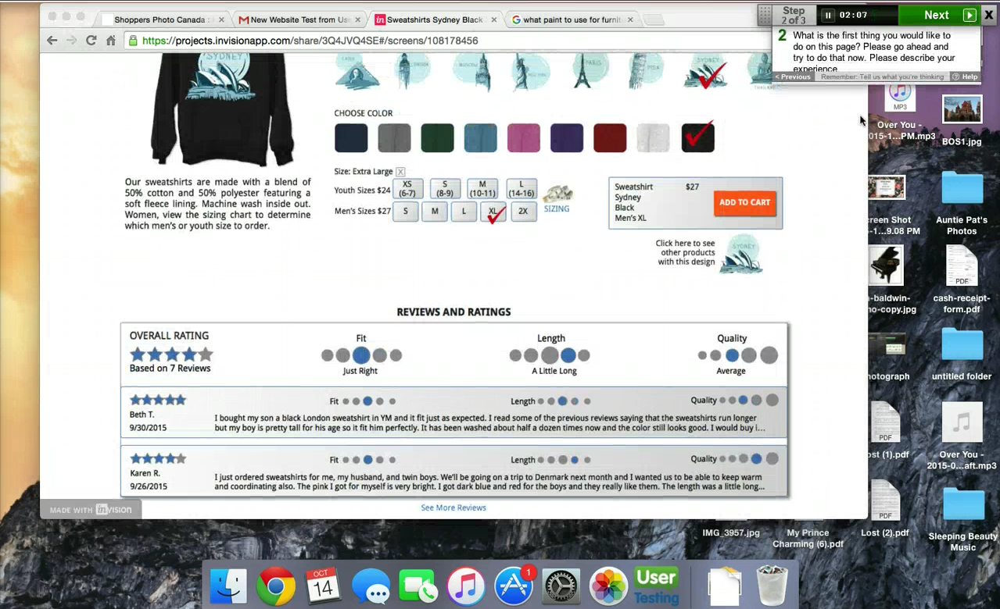
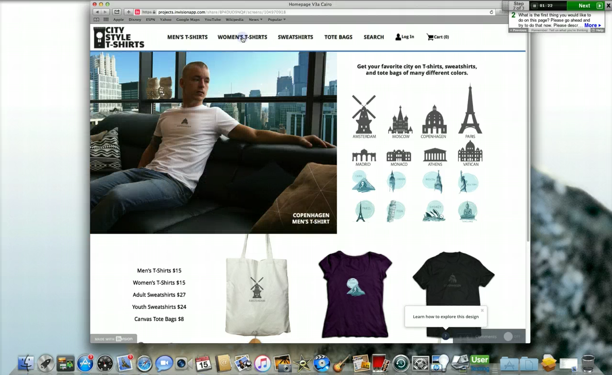
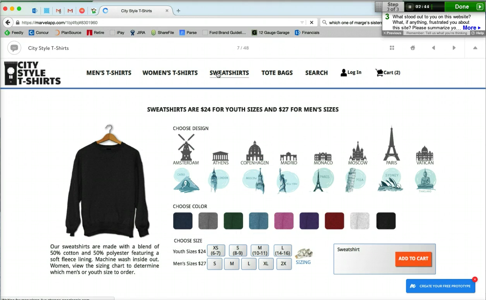

City Style T-Shirts

Summary

I wanted to create an e-commerce website for a company selling T-Shirts that shared my passion for travel.
Explanation
The goal was to create a user-friendly e-commerce website for T-shirts with a quick and easy checkout process.
Problem
My first goal was to create a brand and products. I chose to sell T-shirts with images of landmarks to display tourist cities around the world. I used Photoshop to design the shirts in different colors and designs. The site will also sell sweatshirts and tote bags with the same designs. My target audience is men and women between the ages of 20 and 50. After determining products, I needed to display the products in an easy to use format and create an easy shopping cart and checkout process.
Solution
  In order to determine the best way to display my products I compared other e-commerce websites including FansEdge, Threadless, and Hard Graft. FansEdge allows users to filter by many options including sports team, size, gender, type of clothing, brand, and price. I incorporated this idea by separating my website into four pages for men's t-shirts, women's t-shirts, sweatshirts, and tote bags. On each page users can select by design, color, and size. A useful feature I noticed on Threadless was that while viewing a product, the user can select other types of clothing with the same design. I added this feature to view other products with the same selected design. Frustrations I found in Hard Graft were that it was difficult to click links that were close together and that the site needed to calculate shipping to the US even though all US states had the same flat rate.
Results
I ran several usability tests on branding, layout, and navigational flow. I also published my prototype with limited click capabilities on Marvel App in order to do some Peek testing.
Logo Design
For branding, I asked testers to compare potential page headers.

.png)
 

User Flow
For layout, I found that most users first looked at the at the top of the page to find the type of product they wanted to view. I also found that users preferred the home page to show a large photo in addition to a few product examples rather than lots of examples. On the product page it was best to display the options in a single line rather than a group. I also learned that users expect to see the product update for each selection made.


.png)
Cart and Checkout
I found that after adding an item to their shopping cart, users tended to click on the pop-up cart box or back to the navigational links to continue shopping, and radio style selection for shipping options worked best.
.png)
.png)
.png)
I got feedback on 3 testers.
  Conclusion
According to my usability tests I feel that the MVP is successful. For future improvements I would include professionally shot photography with models wearing each of the different products to show customers how the clothing fits on a regular person and provide multiple angles. For future design projects I would use less design, color, and size options for the clickable prototype. I found that using InVision or Marvel to publish a clickable prototype only works well with fewer than 75 screens. When developing this site it would be best to disable the add to cart button until the user has made a selection for each product option (design, color, and size).